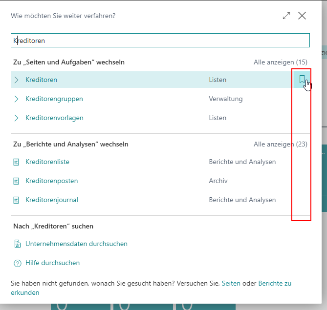
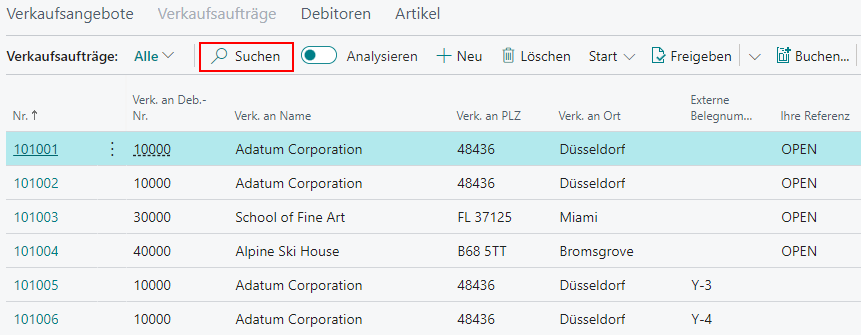
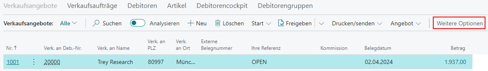
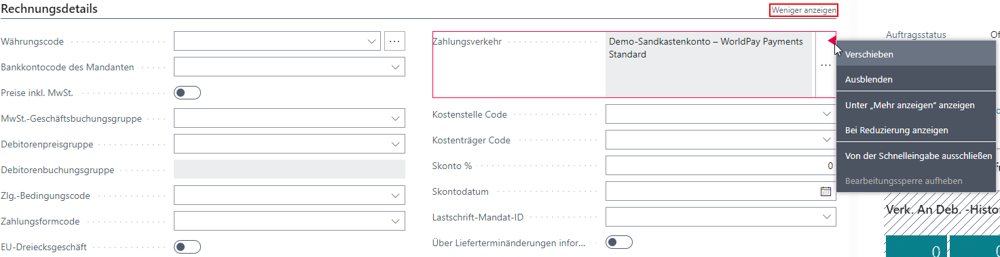
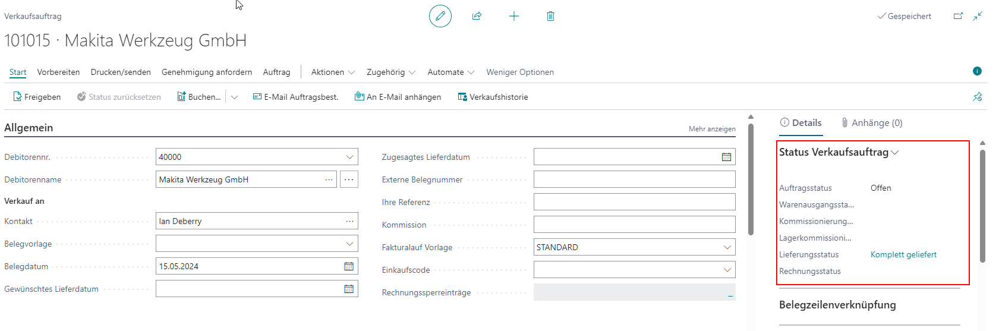

Tipps und Tricks
Hier finden Sie einige Tipps und Tricks zum Umgang mit gevis ERP | VEO.
So öffnen Sie einen Link in einem neuen Tab
Diese Browser-Funktion wird von Microsoft Business Central nicht unterstützt. Alternativ können Sie über die Tastenkombination Shift+Alt+W die Funktion Seite in neuem Tab öffnen ausführen. Im Microsoft Edge-Browser können Sie optional die Tastenkombination Shift+Ctrl+K verwenden, wodurch der aktuelle Tab kopiert und geöffnet wird.
Lesezeichen
Lesezeichen sind Abkürzungen zu Menüeinträgen, die im Rollencenter angezeigt werden. Sie können auf der jeweiligen Seite oder über die Suche, Menüeinträge mit einem Lesezeichen versehen. Dies ermöglicht Ihnen einen deutlich schnelleren Zugriff auf diese Seiten. Weitere Informationen finden Sie unter Erstellen eines Lesezeichens für eine Seite oder einen Bericht im Rollencenter.

Markieren und Kopieren von mehreren Datensätzen
Sie können die Microsoft Windows-Funktionen zum Markieren von Datensätzen verwenden:
- Ctrl+Linksklick (Ctrl-Taste gedrückt halten und auf einzelne Einträge klicken): Mit dieser Methode können Sie mehrere einzelne Einträge auswählen, die sich nicht direkt nebeneinander befinden. Jeder Klick fügt den Eintrag zur Auswahl hinzu oder entfernt ihn daraus.
- Shift+Linksklick (Shift-Taste gedrückt halten und auf zwei Einträge klicken): Mit dieser Methode können Sie einen zusammenhängenden Bereich von Einträgen auswählen. Klicken Sie auf den ersten Eintrag, halten Sie die Shift-Taste gedrückt, und klicken Sie dann auf den letzten Eintrag, um alle Einträge dazwischen und einschließlich der beiden ausgewählten Einträge zu markieren.
- Shift+Bild runter (Shift-Taste gedrückt halten und auf eventuell mehrfach die Bild-runter-Taste drücken): Mit dieser Methode können Sie mehrere Einträge oder Textzeilen in größeren Schritten markieren. Wenn Sie die Shift-Taste gedrückt halten und die Bild-runter-Taste drücken, wird der aktuelle Markierungsbereich um eine Bildschirmseite nach unten erweitert. Wird Bild runter erneut gedrückt wird alles bis zum Ende der Tabelle markiert. Dies ist nützlich, um schnell größere Bereiche auszuwählen, ohne mehrere Male die Shift-Taste und die Pfeiltasten benutzen zu müssen.
Mit der Tastenkombination Ctrl+C können Sie die markierten Datensätze kopieren. Mit der Tastenkombination Ctrl+V können Sie das Kopierte einfügen. Weitere Informationen finden Sie unter Kopieren und einfügen FAQ.
Suchfunktion
Hier finden Sie Tipps und Tricks rund um das Thema Suchfunktion.
Suchfunktion des Browsers
Mit der Tastenkombination Ctrl+F können Sie die aktuell angezeigte Webseite gezielt durchsuchen. Sie müssen jedoch bedenken, dass nur der aktuell sichtbare Text durchsucht wird. Werte in zugeklappten Inforegistern, Feldern, Infoboxen und Werte, die sich unter "Mehr anzeigen" verbergen, werden nicht durchsucht.
Suchfunktion in Übersichten
In vielen Übersichten können Sie Belege über das Feld Suchen finden. Gesucht wird der Text in allen sichtbaren Feldern. Sie können das Feld Suchen auch direkt mit der Taste F3 anwählen und Ihren Suchbegriff eingeben.

Tipp
Sie können in Suchen Filteroperatoren, Ausdrücke und Filtertoken wie * benutzen. Mit dem Ausdruck Man* finden Sie alle Worte, die mit "Man" beginnen, egal wie sie enden (zum Beispiel Mannheim). Mit dem Ausdruck *man finden Sie Worte, die mit "man" enden (zum Beispiel Roman). Weitere Informationen finden Sie unter Sortieren, Durchsuchen und Filtern.
Weitere Optionen im Menüband
Die Schaltfläche Weitere Optionen finden Sie in den meisten Menübändern. Mit dieser Option machen Sie viele Funktionen sichtbar, die zuvor nicht angezeigt wurden. Falls Sie eine Funktion auch dort nicht finden können, müssen Sie diese eventuell einrichten. Gehen Sie vor wie in Arbeitsbereich Personalisieren beschrieben. Für eine bessere Übersicht wird diese Schaltfläche in den Klickanleitungen nicht erwähnt. 
So personalisieren Sie Ihren Arbeitsbereich
Mit dieser Funktion können Sie die angezeigte Seite freier gestalten und einrichten. Sie können beispielsweise Felder, Schaltflächen, Spalten und Funktionen verschieben oder ausblenden. Sie können ebenfalls personalisieren, welche Informationen in Inforegistern immer angezeigt werden, sodass diese nicht nur unter "Mehr anzeigen" erscheinen. Weitere Informationen finden Sie unter Arbeitsbereich personalisieren.

So deaktivieren Sie die Personalisierung für einzelne Rollen
- Klicken Sie im Menüband Dynamics 365 Business Central auf das Symbol Lupe , geben Sie im Suchfeld Profil(Rollen) ein und klicken Sie auf das übereinstimmende Suchergebnis.
- Klicken Sie auf das Feld Profil-ID einer Rolle.
- Aktivieren Sie im Inforegister Weitere Einstellungen den Schalter Anpassung deaktivieren.
Infoboxen
Infoboxen befinden sich im rechten Bereich einer Seite, sind vertikal angeordnet und können aus mehreren Teilen bestehen. Sie enthalten viele nützliche zusammengefasste Informationen. Um verschiedene Infoboxen anzuzeigen oder einzurichten gehen Sie vor wie in Arbeitsbereich Personalisieren beschrieben.

Weitere Informationen finden Sie unter Adding a FactBox to a Page, Infobox Artikelverfügbarkeit Lagerort und unter Infobox Meine Informationen einrichten.
Zeitüberschreitung der Sitzung (Session-Timeout)
Die Zeitüberschreitung einer Sitzung im Web-Client wird durch Einstellungen im Microsoft Dynamics NAV Server (ClientServicesIdleClientTimeout) und in der Web-Client Einrichtung (SessionTimeout) gesteuert. Eine Sitzung wird basierend auf der Einstellung mit der kürzesten Zeitdauer geschlossen (die Standard-Einstellung ist 20 Minuten).
Weitere Informationen finden Sie unter Session Timeout Settings and Configuration.
Leistungssteigerung durch minimalistische Oberflächen-Einrichtung (Customizing)
Wenn Sie festellen, dass sich Seiten wie die Artikelauskunft oder das Debitorencockpit nur langsam öffnen lassen, könnte das an Ihrer Oberflächen-Einrichtung (Customizing) liegen. Überprüfen Sie bitte diese Seiten auf folgende Inhalte:
- Benötigen Sie alle eingeblendeten Felder, Unterseiten, Kacheln, Listen oder Infoboxen?
- Gibt es Dopplungen an Informationen, beispielsweise in einer Infobox und auf einer Seite?
- Müssen Informationen auf einer Seite stehen oder reicht es aus, wenn diese über Funktionen aufgerufen werden können?
Hinweis
Die Zeit, die zum Laden einer Seite erforderlich ist, wird durch die Anzahl der angezeigten Informationen beeinflusst. Durch das Reduzieren oder vollständige Ausblenden von sekundären Inhalten, die Sie nur gelegentlich benötigen, sparen Sie diese zusätzlichen Ladenzeiten.
Weitere Informationen finden Sie unter Arbeitsbereich personalisieren.
Siehe auch
Adding a FactBox to a Page
Arbeitsbereich personalisieren
Erstellen eines Lesezeichens für eine Seite oder einen Bericht im Rollencenter
Ihren Arbeitsbereich personalisieren
Infobox Artikelverfügbarkeit Lagerort
Infobox Meine Informationen einrichten
Kopieren und einfügen FAQ
Session Timeout Settings and Configuration
Sortieren, Durchsuchen und Filtern